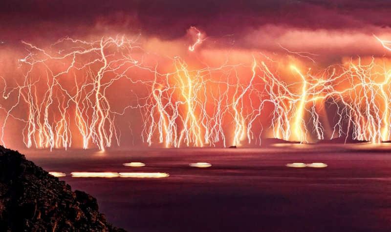
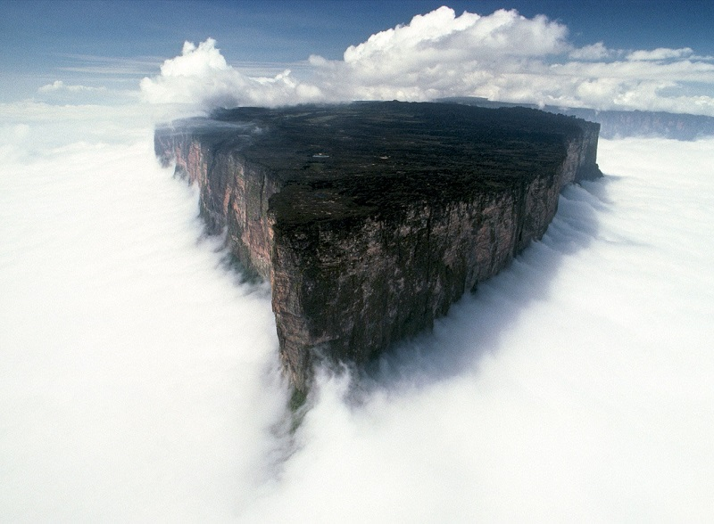

Потрясающая природа
Смотрите сами
В этом разделе я не буду рассказывать банальщину про море и джунгли. Это еще будет в других разделах сайта. Здесь будет об одном уникальном месте, аналогов которому нет нигде в мире, и об одной крутой горе.
Вот есть такое озеро Маракайбо. Оно живописно, присутствует экзотическая растительность, всевозможные виды животных и птиц Национального парка Чиенагас-дель-Кататумбо. Также тропический лес предоставляет шанс посмотреть на необычайных обезьян-ревунов. В окружении озера можно заметить плантации деревьев какао и сахарного тростника. Бла-бла-бла, какая скукотища. Это все ерунда. Мы что обезьян не видели?
Озеро знаменито на весь мир своими молниями. В месте впадания речки Кататумбо в озеро Маракайбо практически сто пятьдесят дней в году, в плохую погоду и в иное время, от семи до десяти часов в день можно наблюдать неповторимое действо природы – сверкающие молнии. Количество их доходит до 300 раз в час. Эти молнии являются крупнейшим на Земле производителем озона. В течение веков они были как путеводная звезда для кораблей, так как заметны на 400-километровом расстоянии – их применяли для навигации, именно поэтому здесь находится маяк Маракайбо. Здешние молнии не сопровождаются раскатами грома, сами же разряды проходят меж тучами и нечасто достигают земли. Коренное народонаселение гордится своими молниями, они изображены на флаге штата Зулия, причем даже в гимне Венесуэлы есть упоминание про это явление.
Вот видос. Всего минутка, а столько огня. Смотрим! Ну как, космос?
Затерянный мир читали?
Ну, Артура Конан Дойля. А что его вдохоновило на написание? Правильно, Южная Америка. Есть такие горы, называются тепуй, или столовые горы. По форме напоминают огромную наковальню. Самая известная из них - Рорайма, по совместительству самая высокая венесуэльская тепуи (столовая гора), достигающая в высоту 2810 метров. Она расположена на стыке Бразилии (штат Рорайма), Венесуэлы (Национальный парк Канайма) и Гайаны (высочайшая точка страны). Долгое время красивейшая гора Южной Америки оставалась неприступной и неизведанной. Только самые смелые индейцы преодолевали сложный путь к заколдованным, по их верованиям, землям, лежащий через практически непроходимые болота и леса, и это чистая правда потому что ваш покорный слуга бывал в этой местности, хоть и на Рорайму подняться не удалось. В 1993 году долина у подножия горы Рорайма послужила площадкой для съемки знаменитого фильма «Парк Юрского периода», режиссером которого является Стивен Спилберг.
 наверх